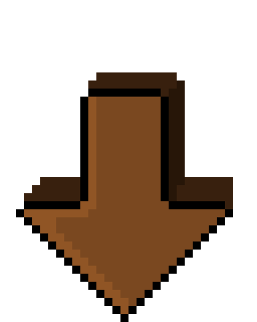

Hi, my name is Marius Westers!
and this is what I look like in real life:


- I work in Business Development.
- I live currently in Düsseldorf, but my hometown is Emsdetten (near Münster).
- I love Music and play two Instruments (Guitar, Drums).
- I am a Gamer and dream of creating my own Videogame.
- During the first Covid Lockdown I started learning programming (Web Dev/Front End).
- I love Dogs.